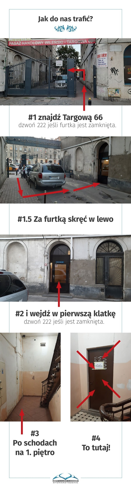

---
layout: default
title: Labirynt, czyli nasza siedziba
---  


<main role="main">
        <div class="row ava_kv no-gutters justify-content-center">
            <div class="col-4 col-lg-2 py-5 my-5">
                
            </div>
        </div>


        <section class="row ava_sekcja no-gutters"
             id="kalendarz">
            <div class="container">
                <div class="row justify-content-center">
                    <div class="col-12">
                        <h1>Co się u nas dzieje?</h1>
                    </div>
                </div>
                <div class="row justify-content-center">
                    <div class="col-12 ava_kalendarz">
                        <iframe src="https://calendar.google.com/calendar/embed?src=jfl9uormt2mm7ka6226es6od4o%40group.calendar.google.com&ctz=Europe%2FWarsaw"
                                style="border: 0"
                                width="100%"
                                height="100%"
                                frameborder="0"
                                scrolling="no"></iframe>
                    </div>
                    <div class="col-12 mt-5">
                        <p>
                            Jeżeli widzisz błąd na stronie kalendarza lub chcesz
                            dodać wydarzenie, pisz na
                            <a href="mailto:labirynt@ava.waw.pl">labirynt@ava.waw.pl</a>
                        </p>
                    </div>
                </div>
            </div>
        </section>


        <section id="jak-trafic"
              class="row ava_sekcja no-gutters">
            <div class="container">
                <div class="row justify-content-center">
                    <div class="col-12">
                        <h1>Jak do nas trafić?</h1>
                    </div>

                    <div>
                        <p>
                            Nasza siedziba znajduje się przy ulicy Targowej 66/22 w Warszawie.
                            Najłatwiej dojechać do nas:
                        </p>
                        <ul>
                            <li>2. linią metra (przystanek Dworzec Wileński)</li>
                            <li>tramwajem - linie 3, 6, 13, 23, 25, 26 (przystanek Ząbkowska)</li>
                            <li>autobusem - linie 135, 162, 170, 338 (przystanek Ząbkowska)</li>
                        </ul>
                    </div>
                    <div>
                        <iframe src="https://www.google.com/maps/embed?pb=!1m18!1m12!1m3!1d610.6132644430179!2d21.036618405744836!3d52.25331743411902!2m3!1f0!2f0!3f0!3m2!1i1024!2i768!4f13.1!3m3!1m2!1s0x471ecd16b28930c3%3A0x2461c0febad8008f!2sStowarzyszenie%20Mi%C5%82o%C5%9Bnik%C3%B3w%20Fantastyki%20AVANGARDA!5e0!3m2!1spl!2spl!4v1761830585782!5m2!1spl!2spl"
                                width="600"
                                height="450"
                                style="border: 0"
                                allowfullscreen=""
                                loading="lazy"
                                referrerpolicy="no-referrer-when-downgrade"></iframe>
                    </div>

                    <div style="display: flex; justify-content: center;">
                        
                    </div>
                </div>
            </div>
        </section>

        <section class="row ava_sekcja no-gutters"
             id="kontakt">
            <div class="container">
                <div class="row justify-content-center">
                    <div class="col-12">
                        <h1>Kontakt</h1>
                    </div>
                </div>
                <div class="row">
                    <div class="col-lg-4">
                        <p>
                            W sprawach związanych z&nbsp;organizacją imprez, pomocą lub
                            dołączeniem do stowarzyszenia prosimy pisać na adres
                            <a href="mailto:kontakt@ava.waw.pl">kontakt@ava.waw.pl</a>
                        </p>
                    </div>
                    <div class="col-lg-8">
                        <p>
                            Stowarzyszenie Miłośników Fantastyki AVANGARDA<br />
                            ul. Targowa 66/22, 03-734 Warszawa<br />
                            mail:
                            <a href="mailto:kontakt@ava.waw.pl">kontakt@ava.waw.pl</a><br />
                            KRS 0000272294, REGON 140858970, NIP 113-26-66-535<br />
                            Konto bankowe: BNP Paribas 30 1750 0012 0000 0000 3400
                            2525
                        </p>
                    </div>
                </div>
            </div>
        </section>

        <!-- sekcja żebraniny ładowana przez jekylla -->
        {% include dej.html %}

    
</main>